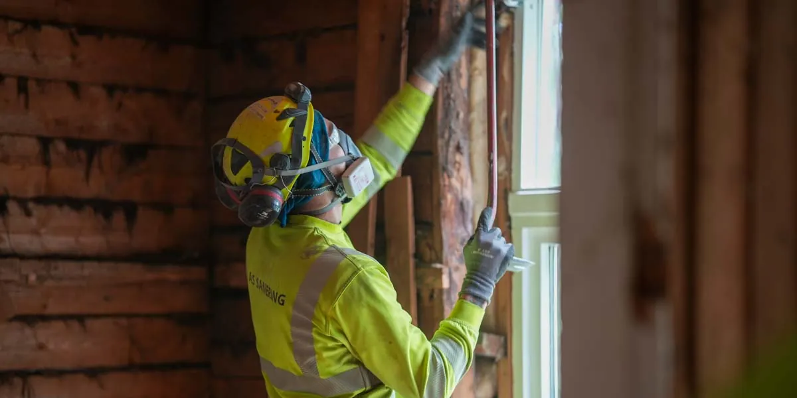

Riving · miljø · asbest
Din naturlige samarbeidspartner for riving
Riving, miljøkartlegging, asbesthåndtering eller kjerneboring og betongsaging — med fastpris som inkluderer komplett leveranse.
PostØstre Rosten 84E, Tiller
Telefon994 94 964
LeveranseFastpris
Organisasjon926 008 420 MVA
Fire fag, én leveranse
Vi tar hele løpet: kartlegging før noe røres, håndtering av farlig avfall, og selve rivingen — dokumentert og til avtalt tid.
Riving
Riving av bygg og konstruksjoner, med plan for støv, støy og avfall.
Les mer 02Miljøkartlegging
Kartlegging av miljøgifter før arbeidet starter — grunnlaget for alt videre.
Les mer 03Asbest
Kartlegging, sikring og sanering av asbest i tråd med regelverket.
Les mer 04Kjerneboring og betongsaging
Presise hull og kutt i betong, med utstyr tilpasset bygget.
Les merBefaring, tilbud, utførelse
Vi kommer gjerne på en uforpliktet befaring, eller kalkulerer utfra mottatt tilbudsgrunnlag.
01
Befaring
Vi ser på bygget og hva som må kartlegges før riving.
02
Tilbud
Fastpris som inkluderer komplett leveranse — ikke tillegg underveis.
03
Utførelse
Prosjektet gjennomføres til avtalt tid og avtalt pris.
Prosjekter vi har gjort
Fra lufthavn til regjeringskvartal — store og små riveoppdrag i hele landet.



Bodø lufthavn
Rive- og saneringsarbeid ved lufthavnen.
Regjeringskvartalet
Sanering i et av landets mest krevende prosjekter.
Teknostallen
Riving og miljøkartlegging.
«Vi kan alltid gi fastpris som inkluderer komplett leveranse.»
Skal noe rives?
Be om en uforpliktende befaring — eller send tilbudsgrunnlaget, så kalkulerer vi.